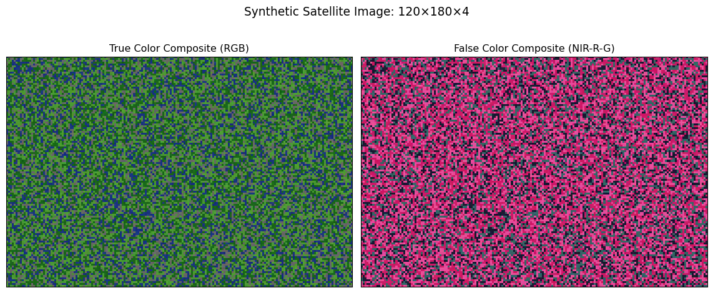

graph LR
A[Full Image] --> B[Tiling]
B --> C[Tile 1]
B --> D[Tile 2]
B --> E[Tile 3]
C --> F[Patch Extraction]
D --> F
E --> F
F --> G[Patch Set for Model]
Overview
This page shows two kinds of visuals that help explain common preprocessing steps for vision models:
- A high-level flow using Mermaid (no Python required)
- Data-like mockups using Python + Matplotlib to draw tile and patch grids on a synthetic image
Flow Diagram (Mermaid)
Tip: Mermaid renders natively in Quarto HTML output. No extra setup needed for basic use.
Data-like Mockups (Python + Matplotlib)
Below we generate a random “image” and draw grid lines to illustrate tiling and patch extraction. These mockups help students visualize how tiles and patches relate to array indices.
Implementation notes: - All visuals use Matplotlib (no seaborn) and avoid custom color styles, per course standards. - Each figure is produced by a single, self-contained code chunk. - Random seed is fixed for reproducibility.
1) Tiling Overlay on a Full Image
We split the image into equally sized tiles (here: 50×50). White grid lines mark tile boundaries.
Code
import numpy as np
import matplotlib.pyplot as plt
# --- Create subtle textured background with fixed colormap range ---
np.random.seed(42)
img = np.random.rand(100, 150)
# Map random values to a narrow range around mid-gray (0.45 to 0.55)
# This creates gentle texture while keeping the colormap fixed at 0-1
img = img * 0.1 + 0.45 # Subtle texture in 10% range around mid-gray
# --- Tile size ---
tile_h, tile_w = 50, 50
# --- Plot ---
fig, ax = plt.subplots(figsize=(6, 4))
ax.imshow(img, cmap='gray', vmin=0, vmax=1) # Fix colormap range
# vertical lines (white for high contrast)
for x in range(0, img.shape[1] + 1, tile_w):
ax.axvline(x - 0.5, color='white', linewidth=2)
# horizontal lines (white for high contrast)
for y in range(0, img.shape[0] + 1, tile_h):
ax.axhline(y - 0.5, color='white', linewidth=2)
# Label each tile
tile_rows = img.shape[0] // tile_h
tile_cols = img.shape[1] // tile_w
for r in range(tile_rows):
for c in range(tile_cols):
center_y = r * tile_h + tile_h // 2
center_x = c * tile_w + tile_w // 2
ax.text(center_x, center_y, f"Tile\n({r},{c})",
ha="center", va="center", fontsize=12,
color='white', weight='bold')
ax.set_xticks([])
ax.set_yticks([])
ax.set_title("Full Image with Tiling Grid (50x50)")
plt.show()2) Patch Extraction Inside a Single Tile
Zoom into the top-left tile (50×50) and split it into smaller patches (here: 10×10). Grid lines show patch boundaries; labels mark patch indices (row, col).
Code
import numpy as np
import matplotlib.pyplot as plt
# Assuming `img` from the previous cell exists in the same execution environment.
# If running independently, re-create it:
np.random.seed(42)
img = np.random.rand(100, 150)
# Map random values to a narrow range around mid-gray (0.45 to 0.55)
img = img * 0.1 + 0.45 # Subtle texture in 10% range around mid-gray
# --- Select the first tile: top-left (0:50, 0:50) ---
tile = img[0:50, 0:50]
# --- Patch size ---
patch_h, patch_w = 10, 10
fig, ax = plt.subplots(figsize=(5, 5))
ax.imshow(tile, cmap='gray', vmin=0, vmax=1) # Fix colormap range
# Draw patch grid (white lines for high contrast)
for x in range(0, tile.shape[1] + 1, patch_w):
ax.axvline(x - 0.5, color='white', linewidth=1)
for y in range(0, tile.shape[0] + 1, patch_h):
ax.axhline(y - 0.5, color='white', linewidth=1)
# Annotate patch indices with high-contrast text
rows = tile.shape[0] // patch_h
cols = tile.shape[1] // patch_w
for r in range(rows):
for c in range(cols):
y_center = r * patch_h + patch_h / 2
x_center = c * patch_w + patch_w / 2
# White text pops better on textured background
ax.text(x_center, y_center, f"({r},{c})",
ha="center", va="center", fontsize=10,
color='white', weight='bold')
ax.set_xticks([])
ax.set_yticks([])
ax.set_title("Zoomed Tile with Patch Grid (10x10)")
plt.show()
Advanced Patch Extraction Concepts
3) Overlapping Patches with Stride
When stride < patch size, patches overlap. This is common in computer vision to capture more spatial information.
Code
import numpy as np
import matplotlib.pyplot as plt
# Create a smaller tile for clearer visualization
np.random.seed(42)
small_img = np.random.rand(36, 45) # Dimensions chosen to work cleanly with patch params
# Map to subtle texture range
small_img = small_img * 0.1 + 0.45 # Gentle texture around mid-gray
# --- Patch parameters ---
patch_size = 15
stride = 9 # Creates 60% overlap (9/15), avoiding 2x multiples
fig, ax = plt.subplots(figsize=(6, 6))
ax.imshow(small_img, cmap='gray', vmin=0, vmax=1) # Fix colormap range
# Calculate patch positions
patch_positions = []
for y in range(0, small_img.shape[0] - patch_size + 1, stride):
for x in range(0, small_img.shape[1] - patch_size + 1, stride):
patch_positions.append((x, y))
# Draw overlapping patches with different colors
colors = ['red', 'blue', 'green', 'orange', 'purple', 'cyan']
for i, (x, y) in enumerate(patch_positions[:6]): # Show first 6 patches
color = colors[i % len(colors)]
# Draw patch boundary
rect = plt.Rectangle((x-0.5, y-0.5), patch_size, patch_size,
linewidth=2, edgecolor=color, facecolor='none', alpha=0.8)
ax.add_patch(rect)
# Label patch center with matching color
center_x, center_y = x + patch_size//2, y + patch_size//2
ax.text(center_x, center_y, f"P{i}", ha="center", va="center",
fontsize=10, color=color, weight='bold',
bbox=dict(boxstyle="round,pad=0.3", facecolor='white', alpha=0.9))
ax.set_xlim(-1, small_img.shape[1])
ax.set_ylim(small_img.shape[0], -1)
ax.set_xticks([])
ax.set_yticks([])
ax.set_title(f"Overlapping Patches (size={patch_size}, stride={stride})")
plt.show()
print(f"Patch size: {patch_size}x{patch_size}")
print(f"Stride: {stride} (overlap = {patch_size - stride} pixels = {100*(patch_size-stride)/patch_size:.0f}%)")
print(f"Total patches extracted: {len(patch_positions)}")
print(f"Image dimensions: {small_img.shape[0]}x{small_img.shape[1]}")
print(f"Patches fit: {(small_img.shape[0] - patch_size) // stride + 1} rows x {(small_img.shape[1] - patch_size) // stride + 1} cols")Patch size: 15x15
Stride: 9 (overlap = 6 pixels = 40%)
Total patches extracted: 12
Image dimensions: 36x45
Patches fit: 3 rows x 4 cols4) Handling Incomplete Patches: Padding Strategies
When image dimensions don’t divide evenly by patch size, we face the “edge problem” - what to do with incomplete patches at borders. Different strategies offer different trade-offs between computational efficiency, information preservation, and artifact introduction.
First, let’s set up our test image and examine the edge problem:
Original image: 40×56 pixels
Patch size: 16×16 pixels
Complete patches that fit: 2×3
Leftover pixels: 8 rows, 8 columns
==================================================Strategy 1: Crop (Discard Incomplete Patches)
Approach: Simply ignore patches that don’t fit completely within the image boundaries.
Pros:
- Fast and simple: No extra computation or memory
- No artifacts: All patches contain only real image data
- Predictable output size: Easy to calculate exact number of patches
Cons:
- Information loss: Edge and corner information is discarded
- Uneven coverage: Some areas of the image are never processed
- Size dependency: Loss percentage varies with image dimensions
Use cases: When speed is critical and edge information is less important (e.g., dense feature extraction where overlap provides coverage).
Strategy 2: Zero Padding
Approach: Extend the image with zero-valued pixels to make dimensions divisible by patch size.
Pros:
- Complete coverage: Every pixel is included in at least one patch
- Simple implementation: Easy to add zeros programmatically
- Consistent output size: Padding can be calculated in advance
Cons:
- Artificial boundaries: Sharp transitions from real data to zeros
- Potential artifacts: Models may learn to recognize padding patterns
- Increased computation: More patches to process
Use cases: When complete coverage is essential and models are robust to boundary artifacts (e.g., segmentation tasks).

Strategy 3: Reflect Padding
Approach: Mirror edge pixels to create natural-looking padding that preserves image structure.
Pros:
- Natural boundaries: Smooth transitions maintain local image statistics
- Structure preservation: Gradients and textures continue naturally
- Better model behavior: Less likely to create learning artifacts
Cons:
- More complex: Requires reflection logic for edges and corners
- Slight computation overhead: Must calculate reflected values
- May duplicate features: Reflected content isn’t truly independent
Use cases: When image quality and natural appearance are important (e.g., super-resolution, denoising, medical imaging).

Choosing Padding Strategies in Practice
Implementation Examples
import torch.nn.functional as F
# PyTorch examples for different padding strategies
def apply_padding_strategy(image_tensor, patch_size, strategy='reflect'):
\"\"\"
Apply padding to make image divisible by patch_size
Args:
image_tensor: (C, H, W) tensor
patch_size: int, size of square patches
strategy: 'crop', 'zero', or 'reflect'
\"\"\"
C, H, W = image_tensor.shape
if strategy == 'crop':
# Calculate largest area that fits complete patches
new_h = (H // patch_size) * patch_size
new_w = (W // patch_size) * patch_size
return image_tensor[:, :new_h, :new_w]
elif strategy == 'zero':
# Calculate padding needed
pad_h = patch_size - (H % patch_size) if H % patch_size != 0 else 0
pad_w = patch_size - (W % patch_size) if W % patch_size != 0 else 0
return F.pad(image_tensor, (0, pad_w, 0, pad_h), mode='constant', value=0)
elif strategy == 'reflect':
pad_h = patch_size - (H % patch_size) if H % patch_size != 0 else 0
pad_w = patch_size - (W % patch_size) if W % patch_size != 0 else 0
return F.pad(image_tensor, (0, pad_w, 0, pad_h), mode='reflect')Decision Framework
Choose CROP when: - Processing large datasets where speed >> completeness - Using overlapping patches that provide edge coverage - Edge regions are less important for your task
Choose ZERO PADDING when: - Need guaranteed complete coverage - Model architecture handles boundaries well - Working with synthetic or highly structured data
Choose REFLECT PADDING when: - Image quality is paramount - Working with natural images where structure matters - Model will be sensitive to boundary artifacts
Real-World Considerations
- Batch processing: Padding strategies affect batch consistency
- Memory usage: Padding increases tensor size and memory requirements
- Post-processing: May need to crop back to original dimensions after inference
- Data augmentation: Padding interacts with augmentation strategies (rotation, flipping)
Most modern frameworks (PyTorch, TensorFlow) implement all three strategies efficiently, making the choice primarily about the specific requirements of your application rather than implementation difficulty.
Key Takeaways
- Overlapping patches capture more spatial information but increase computational cost
- Stride controls overlap: smaller stride = more overlap = more patches
- Padding strategies handle images that don’t divide evenly by patch size:
- Crop: Fast but loses edge information
- Zero padding: Simple but introduces artificial boundaries
- Reflect padding: More natural boundaries, preserves edge information
Variations You Can Try
- Experiment with different stride values (1, 3, 6, 12) to see overlap effects
- Try other padding strategies like “constant” or “wrap” modes
- Compare patch counts and computational requirements across strategies